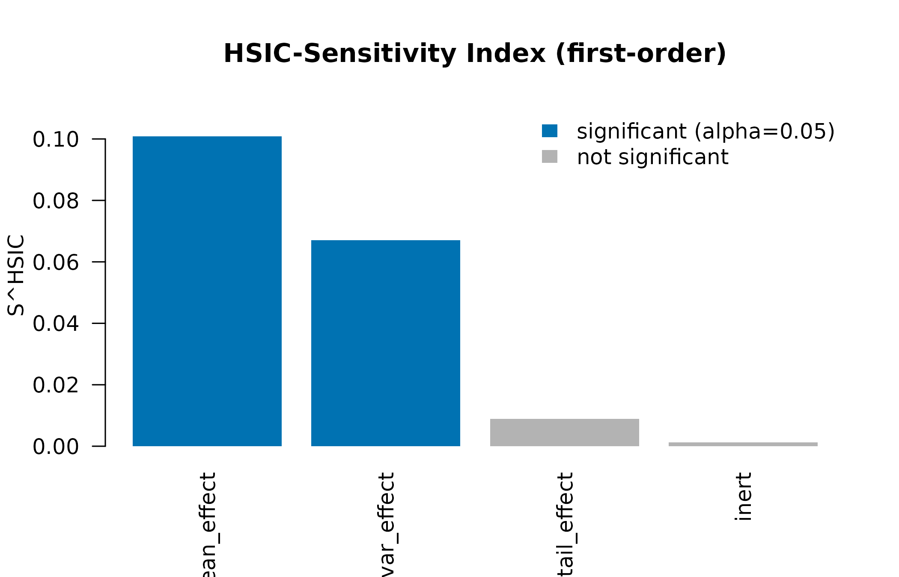
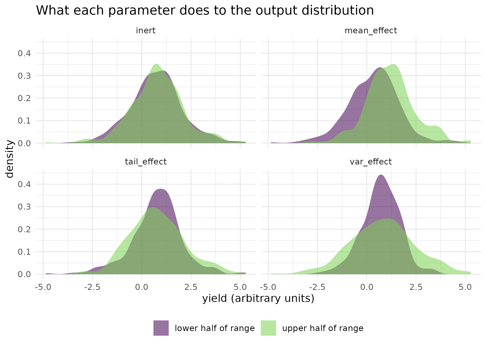

Which parameters change the shape of the output distribution?
Source:vignettes/kernR-sensitivity.Rmd
kernR-sensitivity.RmdWhy
A risk modeller is ranking the parameters of a crop model and does not trust the ranking. The variance budget says one parameter dominates and the rest are negligible. But two of those negligible parameters are the ones that decide whether a bad season is merely poor or a write-off: one fattens the lower tail and one skews the whole distribution, neither of them changes the variance much. Is there a sensitivity index that ranks a parameter by what it does to the distribution rather than by how much variance it explains? This vignette answers with the HSIC-based sensitivity index, on a synthetic simulator whose parameters were built to separate the two questions, and then adds total-order indices for the parameters that act only in combination.
What
A variance-based Sobol index decomposes the output variance into contributions from each input, which makes it blind by construction to any effect that leaves the variance where it was. The HSIC-Sensitivity Index of Da Veiga (2015) replaces the variance with a kernel dependence measure. The normalised first-order index is
bounded like a Sobol index, comparable across parameters, and sensitive to any change in the conditional distribution of the output, including the mean-preserving ones.
hsic_sensitivity() computes it for every parameter
against every output, with a permutation p-value per pair and a
Benjamini-Hochberg adjustment across the grid.
total_order = TRUE adds the total-order index in Da Veiga’s
complement form,
which measures the contribution of
directly plus through every interaction it takes part in.
total_order_ci = TRUE attaches a pair-bootstrap percentile
interval to each total-order index, and
total_order_test = "cond_perm" attaches a
conditional-permutation significance test to it.
lhs_design() builds the design; plot() and
as.data.frame() render the result.
Do
A simulator built to separate the two questions
A synthetic stub with four parameters, each carrying one kind of
effect. mean_effect shifts the mean, which a variance
budget also sees. var_effect changes the spread and nothing
else. tail_effect injects a heavy-tailed component,
changing the shape without moving the centre. inert does
nothing.
stub_apsim <- function(theta) {
n_row <- nrow(theta)
yield <- 1.5 * theta[, "mean_effect"] +
rnorm(n_row, sd = exp(theta[, "var_effect"])) +
theta[, "tail_effect"] * rt(n_row, df = 3) * 0.4 +
rnorm(n_row, sd = 0.05)
matrix(yield, ncol = 1L, dimnames = list(NULL, "yield"))
}
set.seed(1L)
bounds <- rbind(
mean_effect = c(0.0, 1.0),
var_effect = c(-0.5, 0.5),
tail_effect = c(0.0, 1.0),
inert = c(0.0, 1.0)
)
design <- lhs_design(n = 600L, bounds = bounds, seed = 11L)
yield <- stub_apsim(design)The first-order scan
fit <- hsic_sensitivity(
theta = design, y = yield, n_permutations = 199L, seed = 11L
)
fit
#>
#> HSIC-Sensitivity Indices
#>
#> Parameters: 4
#> Outputs: 1
#> N: 600
#> Permutations: 199
#> P-adjust: BH
#> Total-order: no
#>
#> Per-parameter ranking (descending S, max across outputs):
#> S = first-order index
#>
#> parameter S_first_max min_p_first
#> mean_effect 0.101 0.0100
#> var_effect 0.067 0.0100
#> tail_effect 0.009 0.0600
#> inert 0.001 0.9450| Parameter | Output | Index | HSIC statistic | p-value | Adjusted p-value |
|---|---|---|---|---|---|
| mean_effect | yield | 0.1009 | 0.00840 | 0.005 | 0.010 |
| var_effect | yield | 0.0671 | 0.00559 | 0.005 | 0.010 |
| tail_effect | yield | 0.0090 | 0.00075 | 0.045 | 0.060 |
| inert | yield | 0.0013 | 0.00011 | 0.945 | 0.945 |
plot(fit)
The package’s own diagnostic: first-order HSIC-Sensitivity Index per parameter, bars coloured by significance after Benjamini-Hochberg adjustment at alpha = 0.05.
The figure: the distributions behind the index
halves <- do.call(rbind, lapply(colnames(design), function(p1) {
data.frame(
parameter = p1,
half = ifelse(design[, p1] > median(design[, p1]),
"upper half of range", "lower half of range"),
yield = yield[, "yield"],
stringsAsFactors = FALSE
)
}))
ggplot2::ggplot(halves, ggplot2::aes(x = yield, fill = half)) +
ggplot2::geom_density(alpha = 0.55, colour = NA) +
ggplot2::facet_wrap(~parameter) +
ggplot2::scale_fill_viridis_d(name = NULL, end = 0.8) +
ggplot2::labs(
x = "yield (arbitrary units)", y = "density",
title = "What each parameter does to the output distribution"
) +
ggplot2::theme_minimal() +
ggplot2::theme(legend.position = "bottom")
The yield distribution when each parameter is in the lower half of its range against the upper half, one panel per parameter. Under mean_effect the curve slides sideways, which a variance budget also detects. Under var_effect and tail_effect the curve changes width and weight while staying where it is, which is the effect a variance budget is blind to. Under inert the two curves lie on top of each other.
Comparing against Sobol
The sensitivity package is not a dependency of kernR, so
the comparison below is shown as code rather than run here. The expected
contrast is that a variance-based index ranks mean_effect
first and returns small first-order indices for var_effect
and tail_effect, because neither moves the output variance
far.
half <- nrow(design) / 2
sobol_fit <- sensitivity::sobolEff(
model = function(X) stub_apsim(as.matrix(X))[, 1L],
X1 = as.data.frame(design[seq_len(half), ]),
X2 = as.data.frame(design[seq_len(half) + half, ]),
nboot = 200
)
# compare sobol_fit$S against fit$indexThe disagreement is the point. When the HSIC index ranks a variance-flat parameter highly, that parameter is changing the output distribution in a way the variance budget cannot express.
Total-order indices, and a pure interaction
The first-order index measures what a parameter does on its own. It misses a parameter that acts only through an interaction, and the total-order index is built for exactly that case. The synthetic design below is the extreme version: the output is the product of two parameters, so each has a marginal expectation of zero and neither matters alone.
set.seed(42L)
n_int <- 400L
theta_int <- matrix(
runif(n_int * 2L, min = -1, max = 1), n_int, 2L,
dimnames = list(NULL, c("x1", "x2"))
)
y_int <- theta_int[, "x1"] * theta_int[, "x2"] + rnorm(n_int, sd = 0.05)
fit_int <- hsic_sensitivity(
theta = theta_int, y = y_int, total_order = TRUE,
p_value = FALSE, n_permutations = 199L, seed = 42L
)
fit_int
#>
#> HSIC-Sensitivity Indices
#>
#> Parameters: 2
#> Outputs: 1
#> N: 400
#> Permutations: skipped (p_value = FALSE)
#> Total-order: yes
#>
#> Per-parameter ranking (descending S, max across outputs):
#> S = first-order index T = total-order index interaction = T - S
#>
#> parameter S_first_max T_total_max interaction min_p_first
#> x1 0.100 0.906 0.806 --
#> x2 0.094 0.900 0.806 --
plot(fit_int, which = "both")
The package’s own diagnostic: first-order against total-order HSIC-Sensitivity Index for x1 and x2 on the pure-interaction model, side by side. The gap between the two bars is the interaction screen in graphical form.
A near-additive design for contrast
theta_add <- matrix(
runif(n_int * 2L), n_int, 2L, dimnames = list(NULL, c("x1", "x2"))
)
y_add <- 2 * theta_add[, "x1"] + theta_add[, "x2"] +
rnorm(n_int, sd = 0.05)
fit_add <- hsic_sensitivity(
theta_add, y_add, total_order = TRUE, p_value = FALSE, seed = 1L
)
fit_add
#>
#> HSIC-Sensitivity Indices
#>
#> Parameters: 2
#> Outputs: 1
#> N: 400
#> Permutations: skipped (p_value = FALSE)
#> Total-order: yes
#>
#> Per-parameter ranking (descending S, max across outputs):
#> S = first-order index T = total-order index interaction = T - S
#>
#> parameter S_first_max T_total_max interaction min_p_first
#> x1 0.721 0.884 0.163 --
#> x2 0.116 0.279 0.163 --| Design | Parameter | First-order S | Total-order T | T minus S |
|---|---|---|---|---|
| interaction, Y = X1 X2 | x1 | 0.100 | 0.906 | 0.806 |
| interaction, Y = X1 X2 | x2 | 0.094 | 0.900 | 0.806 |
| additive, Y = 2 X1 + X2 | x1 | 0.721 | 0.884 | 0.163 |
| additive, Y = 2 X1 + X2 | x2 | 0.116 | 0.279 | 0.163 |
An interval on the total-order index
total_order_ci = TRUE attaches a pair-bootstrap
percentile interval to each total-order index. It quantifies uncertainty
in the magnitude of the index; it is not a hypothesis test.
fit_ci <- hsic_sensitivity(
theta_add, y_add, total_order = TRUE, total_order_ci = TRUE,
n_permutations = 199L, n_bootstrap = 100L, ci_level = 0.95, seed = 7L
)
ci_df <- as.data.frame(fit_ci)[, c(
"parameter", "output", "index_total_order",
"ci_total_order_lower", "ci_total_order_upper"
)]| Parameter | Output | Total-order T | Lower | Upper |
|---|---|---|---|---|
| x1 | y1 | 0.884 | 0.836 | 0.920 |
| x2 | y1 | 0.279 | 0.242 | 0.322 |
An earlier release attached a total_order_p_value to
these bootstrap draws, claiming to test
.
Critical review on 2026-05-16 found it mis-calibrated under a pure-noise
output, because the bootstrap resamples the empirical joint distribution
rather than a null-of-no-effect, and every parameter was assigned a
p-value of approximately
regardless. The field was removed.
The properly calibrated significance test
The replacement tests : is independent of given , by clustering the design on similarity in , permuting the output within each cluster, and recomputing on every permuted design.
fit_cp <- hsic_sensitivity(
theta_add, y_add, total_order = TRUE,
total_order_test = "cond_perm", n_permutations = 199L, seed = 21L
)
cp_df <- as.data.frame(fit_cp)[, c(
"parameter", "output", "index_total_order", "p_value_total_order"
)]| Parameter | Output | Total-order T | Conditional-permutation p-value |
|---|---|---|---|
| x1 | y1 | 0.884 | 0.51 |
| x2 | y1 | 0.279 | 0.89 |
Read
On the 600-row design the index ranks mean_effect first
at 0.101, with an adjusted p-value of 0.01; a variance budget would find
that one too. The parameter that carries the argument is
var_effect, which returns 0.0671 with an adjusted p-value
of 0.01, despite being built to leave the conditional mean exactly where
it was. inert returns 0.00127 with an adjusted p-value of
0.945, which is the floor the design was built to produce.
tail_effect is the instructive case. Its index is
0.00897, above inert but well below
var_effect, and its adjusted p-value is 0.06, which does
not clear the conventional threshold of 0.05. The effect is real by
construction, and at this design size the screen does not have the power
to certify it: a heavy tail scaled by a parameter in the unit interval
is a weaker signal than a change of spread, and a larger design or a
longer permutation run is what would settle it. Reporting that is the
point of the p-value column.
The figure shows what the index is responding to: the
var_effect and tail_effect panels have two
curves of different width and tail weight sitting in the same place,
which is the signature a variance budget cannot express, while the
inert panel has two curves lying on top of each other.
On the pure-interaction design the first-order indices are 0.1 and 0.0941 – close to nothing, because the marginal effect of either parameter averages out over the other – while the total-order indices are 0.906 and 0.9. The gap between them is 0.81 on average, against 0.16 on the near-additive design. That contrast is the interaction screen: a large gap is evidence of interaction, a small one is not evidence of its absence, and the difference has no null distribution of its own.
The pair-bootstrap interval on the near-additive design puts the
total-order index for x1 between 0.836 and 0.92, an
interval on the magnitude and not a test. The conditional-permutation
test supplies the verdict the interval cannot: on this additive design
the two total-order p-values are 0.51 and 0.89, so neither total-order
index survives its own null. That is the expected answer where there is
no interaction to find, and it agrees with the small T
minus S gap in the table above.
Limits
The simulator here is a stub with independent, uniformly distributed
parameters, chosen so that each effect is isolated and the right answer
is known; correlated parameters break the interpretation of both
indices, because
then carries information about
.
The HSIC-Sensitivity Index is not numerically equal to a Sobol index
even on a linear additive system: the two are bounded comparably, both
lying in the unit interval, and typically agree on ranking when only
mean effects are present, so the disagreement rather than the agreement
is what carries information. The quantity T minus
S is an uncalibrated contrast, not a variance-budget
identity, and is not zero on an additive model, because the two indices
are built from different normalisers; the conditional-permutation test
is the calibrated statement about the same question. The Sobol
comparison in this vignette is stated as code and a claim about the
direction of the result; it is not run here, and a reader who needs the
numbers should run it. Finally, every p-value here is a permutation
p-value bounded below by 1 / (n_permutations + 1).
Notes on practice
Design size. As for the identifiability screen, a design with at least ten rows per parameter is a workable starting point.
Permutations. When the goal is ranking only,
p_value = FALSE skips the permutation null entirely; the
per-column kernel cache is reused, so the indices themselves are cheap.
Use the default p_value = TRUE when a significance verdict
on the first-order indices is also wanted.
Cost. Total-order construction costs order
for the kernel matrices on each
plus order
for the HSIC evaluations, similar in scale to first-order. The pair
bootstrap multiplies that by n_bootstrap, which defaults to
200, and the conditional-permutation test multiplies it by the
permutation count, so both should be budgeted for.
Nystrom acceleration for total-order is deliberately
not exposed. Folding nystrom_factor() into the total-order
computation by materialising the low-rank product into a full kernel
matrix costs order
and is slower than the exact path at the scales kernR runs at; a
factor-only HSIC primitive is the step that would unblock it.
What to read next
Which parameters are worth calibrating? is the pass-or-fail version of this scan, used before a calibration to decide which parameters enter the prior at all. Scaling HSIC to large ensembles covers the low-rank approximations that make the first-order scan affordable on designs too large for an exact Gram matrix. Getting started with kernR introduces the HSIC statistic these indices normalise.
References
- Da Veiga, S. (2015). Global sensitivity analysis with dependence measures. Journal of Statistical Computation and Simulation, 85(7), 1283-1305.
- Gretton, A., Bousquet, O., Smola, A., & Scholkopf, B. (2005). Measuring statistical dependence with Hilbert-Schmidt norms. Algorithmic Learning Theory, 63-77.
Reproduce
Seed 1 for the simulator noise, seed = 11L
for the Latin-hypercube design and the first-order permutation null,
42 for the pure-interaction design, and seed
values 1, 7 and 21 for the
additive design, the pair bootstrap and the conditional-permutation
test. Package versions follow.
sessionInfo()
#> R version 4.6.1 (2026-06-24)
#> Platform: x86_64-pc-linux-gnu
#> Running under: Ubuntu 24.04.5 LTS
#>
#> Matrix products: default
#> BLAS: /usr/lib/x86_64-linux-gnu/openblas-pthread/libblas.so.3
#> LAPACK: /usr/lib/x86_64-linux-gnu/openblas-pthread/libopenblasp-r0.3.26.so; LAPACK version 3.12.0
#>
#> locale:
#> [1] LC_CTYPE=C.UTF-8 LC_NUMERIC=C LC_TIME=C.UTF-8
#> [4] LC_COLLATE=C.UTF-8 LC_MONETARY=C.UTF-8 LC_MESSAGES=C.UTF-8
#> [7] LC_PAPER=C.UTF-8 LC_NAME=C LC_ADDRESS=C
#> [10] LC_TELEPHONE=C LC_MEASUREMENT=C.UTF-8 LC_IDENTIFICATION=C
#>
#> time zone: UTC
#> tzcode source: system (glibc)
#>
#> attached base packages:
#> [1] stats graphics grDevices utils datasets methods base
#>
#> other attached packages:
#> [1] kernR_0.8.2
#>
#> loaded via a namespace (and not attached):
#> [1] vctrs_0.7.3 cli_3.6.6 knitr_1.52
#> [4] rlang_1.3.0 xfun_0.61 otel_0.2.0
#> [7] generics_0.1.4 S7_0.2.2 textshaping_1.0.5
#> [10] data.table_1.18.6.1 jsonlite_2.0.0 labeling_0.4.3
#> [13] glue_1.8.1 htmltools_0.5.9 PESTO_0.10.1
#> [16] ragg_1.5.2 sass_0.4.10 scales_1.4.0
#> [19] rmarkdown_2.32 grid_4.6.1 evaluate_1.0.5
#> [22] jquerylib_0.1.4 fastmap_1.2.0 yaml_2.3.12
#> [25] lifecycle_1.0.5 compiler_4.6.1 RColorBrewer_1.1-3
#> [28] fs_2.1.0 Rcpp_1.1.2 farver_2.1.2
#> [31] systemfonts_1.3.2 digest_0.6.39 viridisLite_0.4.3
#> [34] R6_2.6.1 bslib_0.12.0 withr_3.0.3
#> [37] tools_4.6.1 gtable_0.3.6 pkgdown_2.2.1
#> [40] ggplot2_4.0.3 cachem_1.1.0 desc_1.4.3